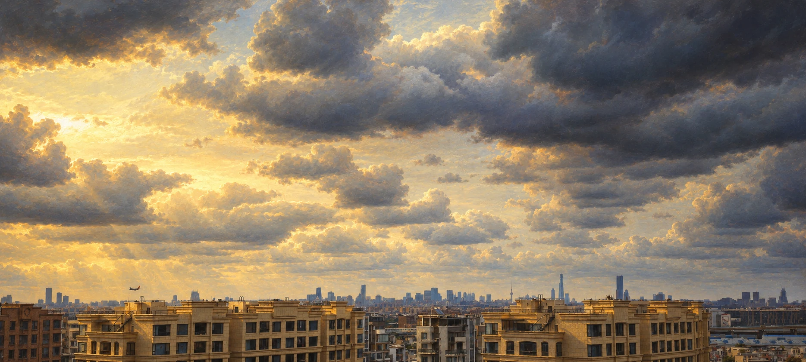
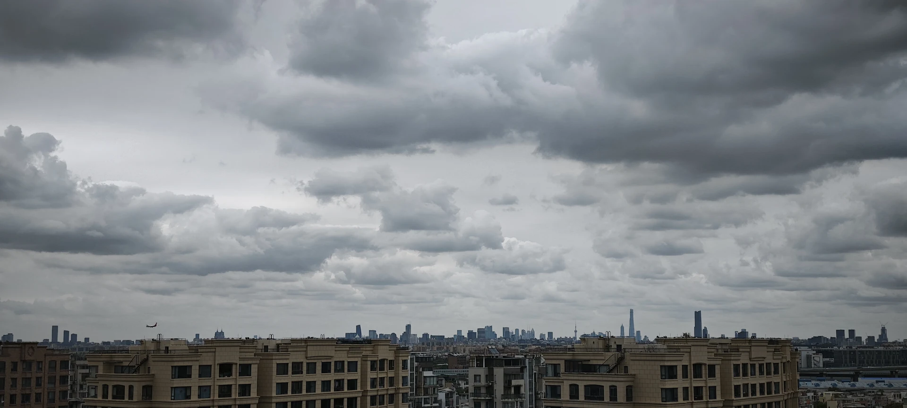

造型
可信体积
保持原有主体轮廓与体积，以明暗塑造大形
观察依据与英文描述
大面积低亮度岩壁、云底和树群托起局部金黄或乳白受光区。光常从云隙或谷口进入，再由雾、水面和岩坡承接；最亮处成为视线的落点。
Keep original silhouettes and volumes, modeling major forms with light and shadow
参考案例 · AS-007
Albert Bierstadt · Sublime Landscapes and Luminous Dusk
Albert Bierstadt
比尔施塔特把山谷、湖岸和草原组织成宏阔而富于情绪的空间。深色树群与岩壁围住远处的亮天、薄雾和水面；暖金受光区在蓝灰风暴云、暗绿树林与褐紫阴影间展开。近景的细节与远景的柔和过渡共同制造可走入的深度。本条以六幅已对应作品的用户复现图归纳风格，另两张同批附图暂存于待核实区。
选择特征，开始创作 →19 世纪美国浪漫主义风景 · 哈德逊河画派背景 · 戏剧性明暗、空气透视与发光的天水
先看大块深影与局部亮光如何引导视线，再看近景枝叶、谷底薄雾与远山怎样分层。宏阔感来自光域、遮挡、空气透视和小尺度生命；山景的风暴光与湖岸、草原的暮色是同一套光影语言的不同变化。
阿尔伯特·比尔施塔特（Albert Bierstadt，1830–1902）为德裔美国画家。作品题名、年代、媒介与馆藏据各图来源，风格特征按可见画面归纳。六张主要参考为用户提供的作品复现图；不同复制版本可能有色彩与边缘差异，不能据此复原原作的精确色值或制作流程。中文题名为图鉴译名。全部原文件、可见署名与复现品水印保留；“油画世界 ArtYouhua”是所见复现品水印，不视作原作者签名。附图 7、8 归属及题名待核实，未参与本条提示词归纳。
具体作品中的证据
Albert Bierstadt · 1866 · 油彩／画布（oil on canvas） · 原作 210.8 × 361.3 cm · Brooklyn Museum · 76.79
低亮度山谷与受光岩坡形成巨大的明暗跨度，云层的体积与冷暖过渡比单纯的金色滤镜更关键。
年代、媒介、原作尺寸和登记号据馆方 2017 年保护公告；原作署名位置据馆藏检索记录为右下。用户附件保留原画面边缘。
Albert Bierstadt · 用户复现图 · Brooklyn Museum 馆方保护公告
查看作品来源 ↗Albert Bierstadt · 1863 · 哈佛馆藏竖幅版本 · 油彩／亚麻布（oil on linen） · 原作 110.8 × 90.2 cm · Harvard Art Museums / Fogg Museum · 1895.698
侧光穿过云层，前景崖壁的暗部和谷底的小块亮地共同放大山体尺度；竖幅画面通过连续遮挡建立深度。
图像对应哈佛馆藏的竖幅作品，同名的纽约大都会博物馆横幅版本是另一幅，不能混用尺寸或登记号。媒介与尺寸据馆方提供给 Google Arts & Culture 的资料，登记号据馆藏关联记录。
Albert Bierstadt · 用户复现图 · Harvard Art Museums 提供的作品资料
查看作品来源 ↗Albert Bierstadt · 1864 · 油彩／纸板（oil on paperboard） · 原作 11⅞ × 19¼ in.（约 30.2 × 48.9 cm） · Museum of Fine Arts, Boston · 47.1236
亮天、薄雾和水中反光构成连续光带，前景鹿群以小尺度衬托巨壁；色彩明亮，结构仍由大暗形稳定。
题名、年代、纸板媒介、原作英寸尺寸与登记号据 Smithsonian 展览所列 MFA 资料；厘米数为换算近似。保留附件右下可读署名。
Albert Bierstadt · 用户复现图 · Smithsonian 展览中的 MFA 馆藏资料
查看作品来源 ↗Albert Bierstadt · 约 1867 · about 1867 · Museum of Fine Arts, Boston
无须高山也能产生宏阔感：低地平线、宽阔光域、树冠暗形和野牛队列一起组织暮色空间。
采用 MFA 馆方题名与约年。它与 NGA 的 Buffalo Trail: The Impending Storm（1869）是不同作品。本次所用馆方页面未列原作尺寸，故不补填。
Albert Bierstadt · 用户复现图 · MFA Boston 官方复现品资料
查看作品来源 ↗Albert Bierstadt · 约 1870 年代 · circa 1870s · 油彩／画布（oil on canvas） · 原作 92.7 × 133.4 cm · 私人收藏作品 · 佳士得拍卖记录（2017）
树干、远山和倒木保持深色骨架；晚霞的暖色集中于天空与倒影，平静水面让充满变化的云层更突出。
已与佳士得拍卖图逐一比对：左侧双松、中央倒木、远山、右岸树群与鸟影对应。附件整体色调更偏红，保留现有“油画世界 ArtYouhua”复现品水印。拍卖记录不能据以确认当前持有人。
Albert Bierstadt · 用户复现图 · Christie’s 作品及拍卖资料
查看作品来源 ↗Albert Bierstadt · 1868 · 油彩／画布（oil on canvas） · 原作 36¼ × 52¼ in. · Haggin Museum
暖光穿过暗云与巨壁之间的开口，沿河流继续进入谷底；前景松树和侧壁的浓影强化远景亮度。
已与哈金博物馆原图对照：左侧尖岩、前景树干和松群、右侧巨壁、谷底曲折河道一致。不是 Birmingham Museum 的 Looking Down Yosemite Valley, California（1865）。保留附件中的复现品水印。
Albert Bierstadt · 用户复现图 · Haggin Museum 馆藏资料
查看作品来源 ↗这些图片保留用于视觉比较，不作为该艺术家的已核实作品。
已对照 MFA 的 Fishing Boats at Capri（1857），其渔船、海岸和人物构图与附图不同；另一位画家 Gudin 的相似题材也不对应。保留可见暮色、帆船与人物队列作为对照，不据相似题材填写题名、年代或媒介。
用户作为比尔施塔特作品提交；本次未取得同图的可靠作品记录，不确认为作者原作。
用户提供 · 作者与正式题名待核实
已对照 In the Mountains、Rocky Mountain Landscape（1870）和 Reynolda 的 Sierra Nevada 等候选复现，山峰、树木与湖岸构图不对应。保持原图与“油画世界 ArtYouhua”水印，不把相似山湖画的馆藏资料移用到本图。
用户作为比尔施塔特作品提交；未取得题名、馆藏与附图同时对应的可靠记录。
用户提供 · 作者与正式题名待核实
七个观察维度
下面是一套可取舍的建议。配色来自本页示例，可以改为沿用原图；形状、构图的表述以保留原内容为前提。
造型
保持原有主体轮廓与体积，以明暗塑造大形
大面积低亮度岩壁、云底和树群托起局部金黄或乳白受光区。光常从云隙或谷口进入，再由雾、水面和岩坡承接；最亮处成为视线的落点。
Keep original silhouettes and volumes, modeling major forms with light and shadow
线条
近处轮廓清楚，远处轮廓逐渐柔化
近景树皮、叶簇、岩石和草地具有细致但不均匀的变化，强轮廓集中在近处或剪影。远景轮廓与纹理逐渐消隐，避免把所有距离画得同样清楚。
Keep nearby contours clear and gradually soften distant edges
色彩
以金黄暖光对照冷灰蓝、深绿与褐紫暗部
云层有清晰的体积转折，边缘由暖亮渐变到冷灰蓝和褐紫。远山较浅、较柔和，薄雾降低远处对比；夕照中的金橙色与深绿、冷灰暗部相互支撑。
Contrast golden warm light with cool gray-blue, deep green and brown-violet shadows
光影
让大面积深影承托局部明亮光域，保留光线逻辑
大面积低亮度岩壁、云底和树群托起局部金黄或乳白受光区。光常从云隙或谷口进入，再由雾、水面和岩坡承接；最亮处成为视线的落点。
Support a localized luminous area with broad deep shadows and coherent lighting
构图与空间
在原构图中加强近深远浅、近实远虚的空气透视
前景以树干、岩块、草坡和遮挡建立入口，中景展开放光的湖水、草地或溪流，远景逐层淡入山体与云气。鹿、野牛和微小人物让自然显得辽阔。
Within the original composition, strengthen atmospheric perspective with darker sharper foregrounds and lighter softer distance
笔触与肌理
近处保留细致变化，远处逐渐减少纹理
近景树皮、叶簇、岩石和草地具有细致但不均匀的变化，强轮廓集中在近处或剪影。远景轮廓与纹理逐渐消隐，避免把所有距离画得同样清楚。
Keep varied fine detail nearby and gradually reduce texture in the distance
氛围
营造宏阔、安静而有诗意的光影氛围
附图 1、2 展现风暴与穿云光；附图 3、5、6 偏重山谷、湖泊的金色暮光；附图 4 以野牛、溪流和树冠组织草原景色。宏阔感可以通过不同题材实现，并不需要重复同一种山峰。
Create a grand, quiet and poetic atmosphere through light
大面积低亮度岩壁、云底和树群托起局部金黄或乳白受光区。光常从云隙或谷口进入，再由雾、水面和岩坡承接；最亮处成为视线的落点。
前景以树干、岩块、草坡和遮挡建立入口，中景展开放光的湖水、草地或溪流，远景逐层淡入山体与云气。鹿、野牛和微小人物让自然显得辽阔。
云层有清晰的体积转折，边缘由暖亮渐变到冷灰蓝和褐紫。远山较浅、较柔和，薄雾降低远处对比；夕照中的金橙色与深绿、冷灰暗部相互支撑。
近景树皮、叶簇、岩石和草地具有细致但不均匀的变化，强轮廓集中在近处或剪影。远景轮廓与纹理逐渐消隐，避免把所有距离画得同样清楚。
直立松树与伸展树冠作为深色框景，枝条和倒木带出横向或斜向节奏。平静水面保留亮天、山壁和树木的倒影，局部雾带或细小波纹打断镜像。
附图 1、2 展现风暴与穿云光；附图 3、5、6 偏重山谷、湖泊的金色暮光；附图 4 以野牛、溪流和树冠组织草原景色。宏阔感可以通过不同题材实现，并不需要重复同一种山峰。
保留输入图的空间骨架，用大块深影、受光焦点和远近对比建立光影秩序，再重绘细节。开阔景色可强化空气透视；树林或城市场景可借助原有树群、建筑和道路框景；人物照片保持身份与姿态，避免让背景喧宾夺主。
避免把每张照片都改成美国西部山谷、强行添加雪峰或鹿群；避免全画橙黄、纯黑暗部、同等清晰的远近细节、夸张光束和只有调色没有绘画重构的处理。
保留原照片的宽幅视角、低位城市天际线、近景建筑关系与左侧小飞机。将厚云完整改绘为冷蓝灰与褐紫的体积，原有亮云区域转为金色和乳白光域；近景建筑以较丰富笔触重绘，远处轮廓通过薄雾与较柔和边缘后退。


原图AI 改绘输入：用户照片 · 输出：AI 改绘（内置 image_gen）；非 Albert Bierstadt 原作
这是一份历史案例记录，包含当次对象和构图；新的改绘请使用上方可选特征组装。
Use case: style-transfer. Asset type: complete panoramic painting, AI reinterpretation of a user photograph. Input images: Image 1 is the sole EDIT TARGET and sole authority for content, composition, architecture, objects, viewpoint and aspect ratio. Image 2 (Bierstadt storm landscape) and Image 3 (Bierstadt Yosemite valley) are STYLE REFERENCES ONLY: borrow their broad light-and-shadow structure, painted cloud volumes, luminous highlights, subtle colored shadows and atmospheric depth. Do not reproduce their terrain, animals, vegetation, water, signatures, text or watermarks. Primary request: Repaint the entire input image using the Romantic visual language of Albert Bierstadt’s landscapes: expansive space, dramatic light and shadow, luminous warm highlights, soft atmospheric perspective and richly observed foreground detail. Let the input determine content, composition and viewpoint; use the references for style. Preserve subject count, recognizable identities and poses, object relationships, existing terrain or architecture, aspect ratio and camera. Establish broad value masses first. Use existing trees, cliffs, buildings or foreground forms as layered dark framing, and organize a clear warm golden or ivory focal light within the scene’s existing illuminated areas. Keep a plausible light direction. Build shadows from deep green, brown-violet and cool blue-gray, retaining subtle internal variation. Only where the input already contains sky, paint volumetric clouds, thin haze, soft dusk light or restrained shafts of sunlight; do not invent sky or force a change of weather or season. Strengthen depth through overlap, progressively lower contrast, cooler and lighter distance and softer distant edges. Repaint existing foliage, rocks, fabric and surfaces with varied visible painted detail, richer near the viewer and simpler farther away, subordinating detail to light. Only where water already exists, paint reflections consistent with the original scene, selectively interrupted by small ripples or thin haze. Keep faces recognizable, poses credible and rendering consistent throughout. Convey grandeur, quiet or an approaching change of weather through light and space. Do not import snow peaks, giant cliffs, pine forests, waterfalls, bison, deer, sailboats or extra people from the references, or relocate the scene. Avoid uniformly orange color, featureless black silhouettes, equally sharp detail at every distance, excessive light beams, plastic materials, uniform texture, photographic patches, fabricated signatures, lettering and new watermarks. Image-specific invariants: This is a modern city panorama viewed from above nearby pale stone apartment rooftops. Keep the original very wide 20:9 aspect ratio (4080:1836), full frame, camera and perspective. The dense city and recognizable distant skyline remain low in the composition, approximately the bottom fifth, with the existing tall tower toward the right, the slimmer spire farther left and the rectangular tall building to its right all retained in their original locations and relative scales. Preserve the small single airplane just above the left-side rooftop at its existing position, scale and orientation. Preserve both large left and right foreground apartment blocks, their cornices, windows, rooftop railings, stairways and all intervening buildings. There are no visible people, no mountains, no vegetation foreground and no water to add. Keep the layered overcast cloud arrangement and broad dark cloud canopy occupying the upper frame. Let warm ivory and restrained pale gold subtly illuminate the existing brighter cloud opening on the left and upper-middle, while the upper-right cloud mass stays cool blue-gray and brown-violet. Do not add a visible sun, change to a blazing sunset, exaggerate shafts of light or erase the existing cloudy weather. Align subtle warm rooftop accents with this soft light from the left/upper-left. Repaint every part with coherent fine oil-painting-like marks: substantial but softly transitioned cloud forms; layered cool atmospheric haze and softer edges across the distant skyline; richer individually varied painted stone, windows and roof details in the near buildings. Do not preserve photographic patches or merely apply a color filter. Keep all forms legible and consistent, with the grand cloud field carrying the emotional scale. No border, no lettering, no added signature or watermark.
保留的完整模板独立于特征选择器，适合阅读与对照。若只想迁移部分特征，请使用“创作提示词”。
将输入图片完整改绘为阿尔伯特·比尔施塔特风景作品所体现的浪漫主义绘画语言：宏阔空间、戏剧性明暗、发光的暖色受光区、柔和空气透视和细致的近景。输入图决定内容、构图和视角，参考图提供风格。保留主体数量、人物身份与姿态、物件关系、原有地形或建筑结构、画幅比例和镜头。先重建大块明暗，让原图已有的树群、岩壁、建筑或前景形体形成有层次的深色框架，并在原场景的受光区域建立一个清晰的暖金或乳白光域。保持合理光源方向，用深绿、褐紫与冷蓝灰组织阴影，暗处仍有微妙层次。仅当原图已有天空时，以有体积的云层、薄雾、柔和霞光或克制的穿云光处理它；不要凭空添加天空或改变天气与季节。通过遮挡、逐级降低对比、变冷变浅的远景和柔和边缘强化空间纵深。把现有草木、岩石、衣料和表面逐一画成可见绘画细节，近处丰富，远处简洁，细节疏密服从光线。仅当原图已有水面时，重绘与原场景一致的山树、建筑或亮天倒影，以细波纹和浅雾局部打断镜像。人物保持可辨认面部、真实姿态与全画统一的绘画质感。保持庄严、静谧或天气将变的氛围，让光影与空间共同产生宏阔感。不要导入参考中的雪山、巨壁、松林、瀑布、野牛、鹿、帆船或新人物，不改变原场景地点。避免全画同样橙黄、纯黑剪影、远近同等锐利、过强光束、塑料材质、均匀纹理、摄影贴片、虚构签名、文字和新水印。
Repaint the entire input image using the Romantic visual language of Albert Bierstadt’s landscapes: expansive space, dramatic light and shadow, luminous warm highlights, soft atmospheric perspective and richly observed foreground detail. Let the input determine content, composition and viewpoint; use the references for style. Preserve subject count, recognizable identities and poses, object relationships, existing terrain or architecture, aspect ratio and camera. Establish broad value masses first. Use existing trees, cliffs, buildings or foreground forms as layered dark framing, and organize a clear warm golden or ivory focal light within the scene’s existing illuminated areas. Keep a plausible light direction. Build shadows from deep green, brown-violet and cool blue-gray, retaining subtle internal variation. Only where the input already contains sky, paint volumetric clouds, thin haze, soft dusk light or restrained shafts of sunlight; do not invent sky or force a change of weather or season. Strengthen depth through overlap, progressively lower contrast, cooler and lighter distance and softer distant edges. Repaint existing foliage, rocks, fabric and surfaces with varied visible painted detail, richer near the viewer and simpler farther away, subordinating detail to light. Only where water already exists, paint reflections consistent with the original scene, selectively interrupted by small ripples or thin haze. Keep faces recognizable, poses credible and rendering consistent throughout. Convey grandeur, quiet or an approaching change of weather through light and space. Do not import snow peaks, giant cliffs, pine forests, waterfalls, bison, deer, sailboats or extra people from the references, or relocate the scene. Avoid uniformly orange color, featureless black silhouettes, equally sharp detail at every distance, excessive light beams, plastic materials, uniform texture, photographic patches, fabricated signatures, lettering and new watermarks.
逐图出处与尚未确定的信息见各图说明；背景资料不自动成为本图的作者证据。